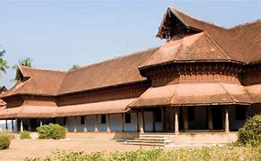

KUTHIRAMALIKA PALACE

Located adjacent to Padmanabhaswamy Temple, Kuthiramalika Palace Museum is the rarest specimen of workmanship. Built by Maharaja Swathi Balarama Varma, this palace displays valuable collections of royal family. Beside the rich collection that it displays, this museum is an exemplary example of traditional Travancore-style architecture. Intricate wood carvings and distinctive patterns constitute a masterpiece of its kinds. Overhanging attics, pillar-lined courtyards and sloping roofs contribute to the exclusive look of the museum. Visitors can expect a display of a collection, including Belgian mirrors, paintings, Kathakali mannequins, exquisite traditional furniture. The two royal thrones; one manufactured of Bohemian crystals, embossed with an emblem of ‘Conch’ on the backrest and the other made of ivory are the prime attractions of the museum. Marble-made idols and sculptures, musical instruments and the alcove used by Swami Thirunal have also been kept in the showcase. An illusion portrait by veteran painter Sveroslav Roerich is another attractive feature here. Kuthiramalika, which is often called as Puthenmalika Palace Museum remains open for visitors from 8.30 AM to 1.00 PM and 3.00 PM to 5.30 PM. Monday is the day that it seeks rests from all week-long visits. The best time of the year to visit Kuthiramalika is January. Commemorating the famous Swathi Thirunal, a lively music festival is conducted each year between 6 and 12 January.
NAPIER MUSEUM
Named after Lord Napier, this art and history museum was established in 1855. An exemplary example of gothic architecture-style, Napier Museum boasts greatly of its natural air conditioning system. It houses an exceptional collection of ornaments, bronze idols, chariots and ivory carvings. The museum offers insight into the rich and glorious culture and history of Kerala. The great contribution made by Rajput, Mughal and Tanjore schools of art along with the skilful work by several Chinese, Japanese and Tibetan artists can be found in here. The Japanese leather figures depicting the epics of Mahabharata and Ramayana catches the eyes of tourists. Napier Museum is certainly one of the most visited tourist places in Trivandrum. Situated in the Museum compound, ground floor of this place houses India’s oldest zoological garden. Another important feature is Sree Chithra Art Gallery, established by Maharaja Chithira Thirunalin in 1935.The gallery contains epic works from much famed Raja Ravi Varma and Nicholas Roerich. Amid a well laid out garden, the zoological park houses a lake and boat club. The park offers an excellent day outing for children and adults alike. It boasts of 75 different species of animals and birds from India, Ethiopia and Australia. It is also a home to the Lion-tailed Macaque, Nilgiri Tahr, Manipur deer, Indian Rhino, Nilgiri Langur, Asiatic Lion and the Royal Bengal Tiger. There is prominent fauna found here along with habitats of giraffe, hippopotamus, zebra and Cape buffalo.
KANAKAKKUNU PALACE

Neighbour to the famous Napier Museum stands Kanakannu Palace, an embodiment of excellent craftsmanship and architecture. This palace is the pride possession of the state of Kerala. Built by Sree Moolan Thirunal for holding royal ceremonies and banquets, it retains its image as a place of entertainment for the royal family. At present too, the palace plays host for many cultural programs. It has been named as the heritage monument by the Indian National Trust for Art and Cultural Heritage (INTACH). Swathi Thirunal, who was a popular ruler of his time, constructed tennis courts in the premises of the palace. Enormous and exquisite crystal chandeliers and antique furniture are the most attractive features here. The beautiful structure is a living testimony of the lifestyle of royals in Kerala. The picturesque backdrop of small yet lush hills and verdant meadows makes it one of the most visited tourist places in Trivandrum. Kanakakunnu Palace is the cultural hub of the city. The palace complex now owns two auditoriums, where a large number of cultural events take place. If you plan a visit, make sure you catch up the All India Dance Festival, popularly known as Nishgandhi festival hosted annually here.
VIZHINJAM ROCK CAVE

Situated 17km away from the city, Vizhinjam Rock Cut Cave Temple is one of the most visited tourist places in Trivandrum. This 8th century rock cut sculpture is single-celled and houses the deity of Vinandhara Dakshinamurthi. Temples have been an important part of the Indian history, thus this particular temple is revered highly in South India. The outer wall of the shrine is replete with images of Lord Shiva and Goddess Parvati. There is also an unfinished sculpture of Lord Shiva, in which he is shown dancing and holding a bow. The intricate carvings of the wall are worth appreciating. Another significant temple in the proximity of Vizhinjam Rock Cut Cave Temple is the Bhagavathy Temple. This holy shrine dates back to 9th and 10th century AD. A Marine Aquarium is also located nearby featuring rare marine ornamental fishes.
VIZHINJAM LIGHT HOUSE

Vizhinjam Light House is situated on the Kurumkal hilltop, just 10 km away from Thiruvananthapuram. The lighthouse was constructed in 1925, the 36 m high masonry tower is at an elevation of 57 m from sea level. There are 144 twisting steps and a steel ladder to reach the top. From the top, one can witness the stunning views of the Arabian Sea on one side and the umbrella of coconut trees on the other. The sunset over the skyline with the lighthouse as a background is a stunning sight. The light is switched on at 5:30 pm and switched off at 6:00 am. Vizhinjam beach encompassing the lighthouse is a piece of the popular Kovalam beach. The lighthouse road is excellent for long walks and cycling. There are also many tiny eateries close to the beach.